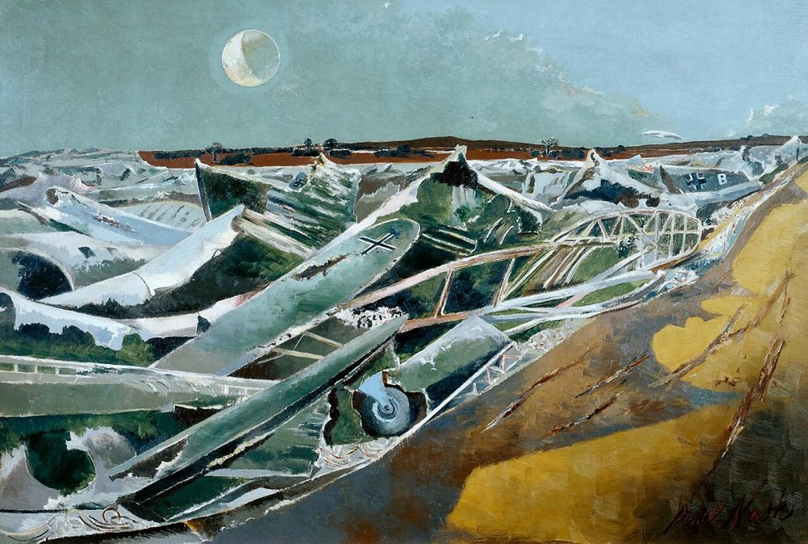

Totes Meer (Dead Sea)
Paul Nash · 1940–41 · Oil on canvas · Tate, London
In copyright. Look and learn: shown for study, not for download.
Nash worked from sketches and photographs he made in August 1940 at a salvage unit at Cowley, near Oxford, where the remains of crashed German and British aircraft were brought to be recycled. He first called the picture Iron Sea, and chose a German title because he hoped it could be reproduced on postcards and sent to Germany as propaganda. He was paid £150 for it. It was shown at the National Gallery in May 1941 and presented to the Tate Gallery in 1946.